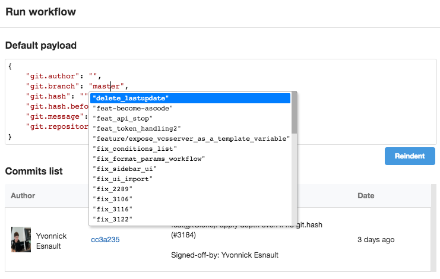

GitClone
GitClone is a builtin action, you can’t modify it.
Clone a repository into a new directory.
Parameters
- branch: (optional) Instead of pointing the newly created HEAD to the branch pointed to by the cloned repository’s HEAD, point to {{.git.branch}} branch instead.
- commit: (optional) Set the current branch head (HEAD) to the commit.
- depth: (optional) Clone with a depth of 50 by default. You can remove –depth with the value ‘false’.
- directory: (optional) The name of a directory to clone into.
- password: (optional) Set the password to be able to git clone from https with authentication.
- privateKey: (optional) Set the private key to be able to git clone from ssh. You can create an application key named ‘app-key’ and use it in this action. The public key have to be granted on your repository.
- submodules: (optional) Submodules are cloned by default, you can set ‘false’ to avoid this.
- tag: (optional) Useful when you want to git clone a specific tag. Empty by default, you can set to
{{.git.tag}}to clone a tag from your repository. In this way, in your workflow payload you can add a key in your JSON like “git.tag”: “1.0.2”. - url: URL must contain information about the transport protocol, the address of the remote server, and the path to the repository. If your application is linked to a repository, you can use {{.git.url}} (clone over ssh) or {{.git.http_url}} (clone over https).
- user: (optional) Set the user to be able to git clone from https with authentication.
Requirements
- git: type: binary Value: git
YAML example
Example of a pipeline using GitClone action:
version: v1.0
name: Pipeline1
stages:
- Stage1
jobs:
- job: Job1
stage: Stage1
steps:
- gitClone:
branch: '{{.git.branch}}'
commit: '{{.git.commit}}'
directory: '{{.cds.workspace}}'
privateKey: proj-mykey
url: '{{.git.url}}'
Example
- Add repository manager on your application.

- Job Configuration.

- Launch workflow, you can select the git branch.

- View logs on job

Notes
By default, depth is 50 and git clone with --single-branch automatically.
So, if you want to do in a step script git diff anotherBranch, you have to set depth to ‘false’.
If there is no user && password && sshkey setted in action GitClone, CDS checks on Application VCS Strategy if some auth parameters can be used.